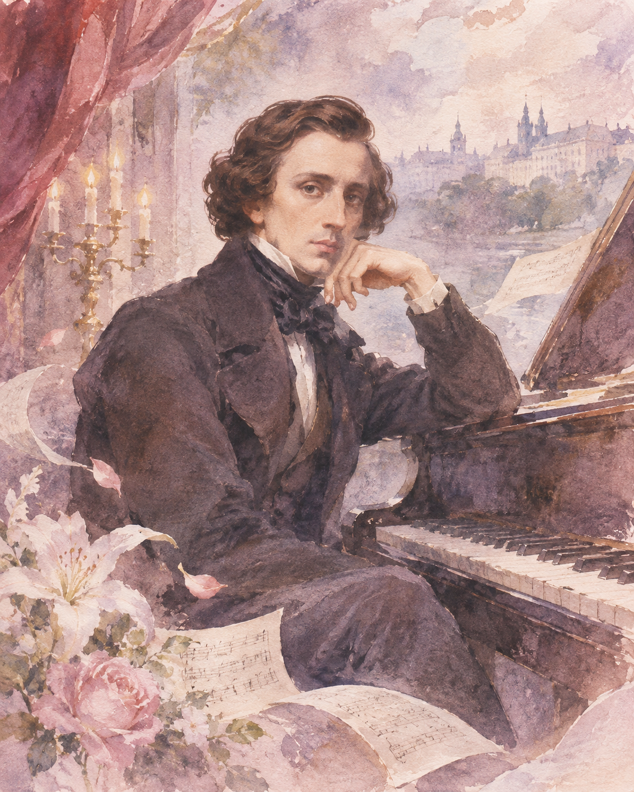

2/20 17:00 — 24:10
日落場
- 音樂廳 兩首協奏曲、講座、波蘭舞曲
- 表演廳 奏鳴曲、圓舞曲、詼諧曲
- 從青年蕭邦的舞台光彩，走向深夜的戲劇張力。
音樂會・24 小時導覽
從日落、月光到白晝的鋼琴旅程

這是一場以蕭邦為主題、跨越整夜的音樂馬拉松。音樂廳與表演廳會有同步節目；可先用本頁掌握時段與場館，再依興趣延伸聆聽。
AT A GLANCE
同時段的節目代表兩廳同步演出；實際可入場範圍請依票種與官方規定確認。

節目表整理自提供的活動手冊；演出與票務以主辦單位最新公告為準。
THREE ACTS
2/20 17:00 — 24:10
2/21 00:30 — 09:15
2/21 09:35 — 17:00
PROGRAMME
以下依開演時間列出。點開每一場可看場館、演出者與核心曲目；兩廳同時演出時，請依票種選擇。
2 月 20 日 17:00 至午夜：從青年協奏曲、奏鳴曲與舞曲，逐步進入深夜的心理劇場。
音樂廳・林瑋祺、廖嘉弘、國立臺灣交響樂團。Op. 22《平靜的行板與華麗大波蘭舞曲》、e 小調第一號鋼琴協奏曲 Op. 11。
表演廳・橫山幸雄。第二號鋼琴奏鳴曲 Op. 35、第三號鋼琴奏鳴曲 Op. 58。
音樂廳・焦元溥講座。從鋼琴寫作與演奏技術切入蕭邦的創新。
音樂廳・林品宏。Op. 13、Op. 14 與 Op. 2 的協奏性作品。
表演廳・汪奕聞。從沙龍舞步到鋼琴上的華麗音色。
音樂廳・焦元溥講座。認識蕭邦如何在傳統曲種中開出新的聲響。
音樂廳・胡瀞云。Op. 26、40、44、53《英雄》、61《幻想波蘭舞曲》等。
表演廳・盧易之。四首詼諧曲，從玩笑性的名稱走向高度戲劇化的獨奏世界。
2 月 21 日 00:30 至 09:15：爵士改編、馬祖卡、夜曲、幻想曲與完整練習曲，陪伴一夜的音色變化。
音樂廳・許郁瑛、安東尼・斯普蘭格、馬蒂斯・雷諾、托比亞斯・弗朗霍費爾。蕭邦主題的爵士語彙。
表演廳・盧易之。三拍舞步中帶有錯位重音、停頓與鄉土音調。
音樂廳・林佳鋐。聽旋律、裝飾與左手伴奏之間的自由呼吸。
表演廳・吳亞欣。延續馬祖卡的舞步感與細微色彩。
音樂廳・陳世偉。從私密歌唱到更寬廣的和聲戲劇。
表演廳・林冠廷。幻想曲與拉赫曼尼諾夫變奏曲。
音樂廳・葉孟儒。Op. 10、Op. 25 全集與三首新練習曲。
2 月 21 日 09:35 至 17:00：前奏曲、敘事曲、室內樂、歌曲與協奏曲，將一夜的旅程帶回開闊舞台。
表演廳・陳宜鍾。短篇幅中的和聲、節奏與情緒轉折。
音樂廳・焦元溥講座。從蕭邦的發明，聽見後來作曲家與演奏者的回應。
音樂廳・橫山幸雄。四首敘事曲的主題轉化與戲劇性收束。
表演廳・吳亞欣等。Op. 3、8、65。
音樂廳・焦元溥講座。從文學與時代想像再讀蕭邦。
音樂廳・林映旻、賴致融。蕭邦不常被放在鋼琴之外談論的聲樂世界。
表演廳・黃俊瑜、陳芝羽。從華彩音型到歌唱旋律的多種獨奏面貌。
音樂廳・謝維庭。f 小調第二號鋼琴協奏曲 Op. 21 與葛拉祖諾夫。
TICKETS & ENTRY
主辦單位公布的票面價格如下，並不代表即時庫存；實際票況、退換票與入場規定請以官方頁面為準。
THE SERIES
衛武營自 2022 年起以一位作曲家為核心，讓觀眾在 24 小時裡從不同曲種、年代與編制重新認識其音樂世界。
LISTEN FURTHER
這些連結是作品與演奏版本的參考，不是 2027 年現場實況。
HOW TO PLAN
24 小時主節目結束後，2 月 21 日 18:30 另有橫山幸雄 PLUS 加碼場，須另外購票，並不屬於本頁的 24 小時主節目。